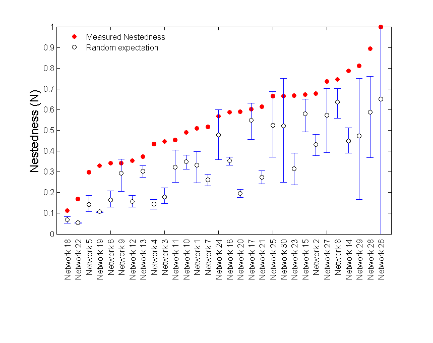
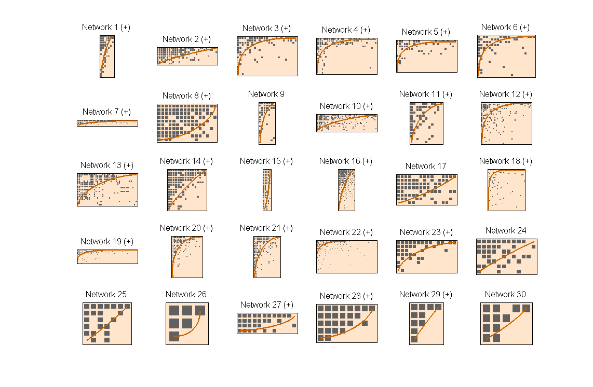

Some times the user may be in need of not only evaluating nestedness and/or modularity in a single bipartite network, but in a set of related networks. There exist many examples in the literature of how these kind of analysis are perfored (i.e. see Flores et al 2011 for Phage-bacteria and Bascompte et al 2003 for plant-pollinator networks). BiMat comes with a couple of classes that the user can use in order to perform this kind of analysis. The name of these classes are MetaStatistics and MetaStatisticsPlotter. The main functionality of the first one is to take as inputo a entire set of bipartite networks and perform modularity and nested analysis among them. Finally, the second class is used in order to have a better visual understanding of the results.
This example will show how to perform this kind of analysis. In order to do that, we will use seed-dispersal bipartite networks. These networks were collected for Bascompte's lab website The Web of Life. We will explain the process of this king of analysis from the point in which the user have already a set of data sets, which in these case correspond to bipartite matrices encoded in text files. The data used in this example can be located inside the examples/data/ directory.
%We will need first to read the data and create all the required matrices. %This part of the code need to be executed inside examples directory matrix_files = dir('data/seed_dispersal_matrices/M_SD_*'); n_files = length(matrix_files); bip_networks = cell(n_files,1); for i = 1:n_files bip_networks{i} = Reader.READ_BIPARTITE_MATRIX(['data/seed_dispersal_matrices/',matrix_files(i).name]); end %Now we can create our MetaStatistics instance: meta_stat = MetaStatistics(bip_networks);
Once we have the MetaStatistics instance, we can configure it to perform modularity and/or nestedness tests. The default is to perform both, but the user can change the behavior by updating the properties do_community or do_nestedness to 0 (false). Equally possible is to chose the number of replicates by matrix, the null model, and the nested and modularity algorithms. If the properties are not updated, the BiMat will as usual use the default values specified on the file base/Options.m. Continuing with the experiment, we will just focus on evaluating Nestedness using NODF algorithm, with 100 replicates and the most simple null model:
%Configure the meta-analysis experiment meta_stat.do_community = false; meta_stat.do_nestedness = true; %default value meta_stat.nestedness_algorithm = @NestednessNODF; meta_stat.replicates = 100;
After configuring the experiment, we can just launch it by typing:
meta_stat.DoMetaAnalyisis();
Testing Matrix: 1 . . . Testing Matrix: 2 . . . Testing Matrix: 3 . . . Testing Matrix: 4 . . . Testing Matrix: 5 . . . Testing Matrix: 6 . . . Testing Matrix: 7 . . . Testing Matrix: 8 . . . Testing Matrix: 9 . . . Testing Matrix: 10 . . . Testing Matrix: 11 . . . Testing Matrix: 12 . . . Testing Matrix: 13 . . . Testing Matrix: 14 . . . Testing Matrix: 15 . . . Testing Matrix: 16 . . . Testing Matrix: 17 . . . Testing Matrix: 18 . . . Testing Matrix: 19 . . . Testing Matrix: 20 . . . Testing Matrix: 21 . . . Testing Matrix: 22 . . . Testing Matrix: 23 . . . Testing Matrix: 24 . . . Testing Matrix: 25 . . . Testing Matrix: 26 . . . Testing Matrix: 27 . . . Testing Matrix: 28 . . . Testing Matrix: 29 . . . Testing Matrix: 30 . . .
After performing the experiment we can print or plot the results:
%print results
meta_stat.Print;
Network, N, N mean,N z-score,N percent
1, 0.5098, 0.33235, 4.8094, 100
2, 0.6766, 0.43183, 8.074, 100
3,0.44697, 0.17841, 13.4529, 100
4,0.43378, 0.14465, 23.4331, 100
5,0.29693, 0.14212, 8.3678, 100
6,0.34166, 0.16475, 8.7503, 100
7,0.51673, 0.26157, 19.0113, 100
8,0.74571, 0.63681, 2.6445, 100
9,0.34243, 0.29211, 1.3387, 92
10,0.48921, 0.35001, 7.9527, 100
11,0.45411, 0.32162, 3.4166, 100
12,0.35492, 0.15633, 15.7696, 100
13,0.37368, 0.30387, 4.7865, 100
14,0.78756, 0.44938, 11.7838, 100
15,0.67344, 0.57913, 2.4251, 100
16,0.58838, 0.35307, 25.1533, 100
17,0.60116, 0.54806, 1.147, 84
18,0.11206, 0.06873, 5.1445, 100
19,0.32872, 0.10731, 91.7237, 100
20,0.58978, 0.19544, 38.072, 100
21,0.61523, 0.27295, 19.3173, 100
22, 0.1681,0.054326, 85.9453, 100
23,0.66797, 0.3153, 8.2307, 100
24,0.56828, 0.47815, 1.5427, 93
25,0.66667, 0.52369, 1.6933, 93
26, 1, 0.65, 0.95074, 49
27,0.73611, 0.57332, 1.8407, 100
28,0.89474, 0.58855, 3.2983, 100
29, 0.8125, 0.4726, 2.5768, 100
30,0.66667, 0.52094, 0.97807, 78
%The next value will be used for the error bars of the plot meta_stat.plotter.p_value = 0.05; %Default value %plot the results figure(1);meta_stat.plotter.PlotNestednessValues();
Finally, we can get a better idea of the results by plotting the nested matrices.
meta_stat.plotter.back_color = [255 229 204]/255; meta_stat.plotter.cell_color = [96 96 96]/255; meta_stat.plotter.isocline_color = [200 100 0]/255; figure(2); meta_stat.plotter.PlotNestedMatrices;
As we can see, most of the matrices are nested (the ones with (+) on the label name. They are nested under the p_value = 0.05 that we chose before using a two side test. This means that the nested matrices (+) are have a value larger than 97.5 % of their corresponding random networks. The user must know that we just repeated part of the results of a very famous paper on the field. If he has the interest, we would like to recommend him to read the original paper Bascompte et al 2003.
Finally, we must say that the user can continue the analysis for modularity. The next lines could complete the work:
meta_stat.do_community = true; meta_stat.modularity_algorithm = @AdaptiveBrim; meta_stat.DoMetaAnalyisis(); figure(3); meta_stat.plotter.PlotModularValues(); figure(4); meta_stat.plotter.PlotModularMatrices();